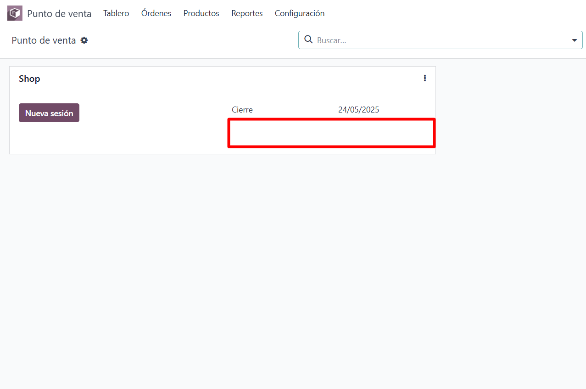

<div class="container">
    <section>
        <h2 style="margin-top: 20px; margin-bottom: 15px;"> Ocultar el campo balance en el POS</h2>
        <p>Este módulo permite ocultar el campo balanca en la vista kanban del POS.</p>
        
        
    </section>
</div>